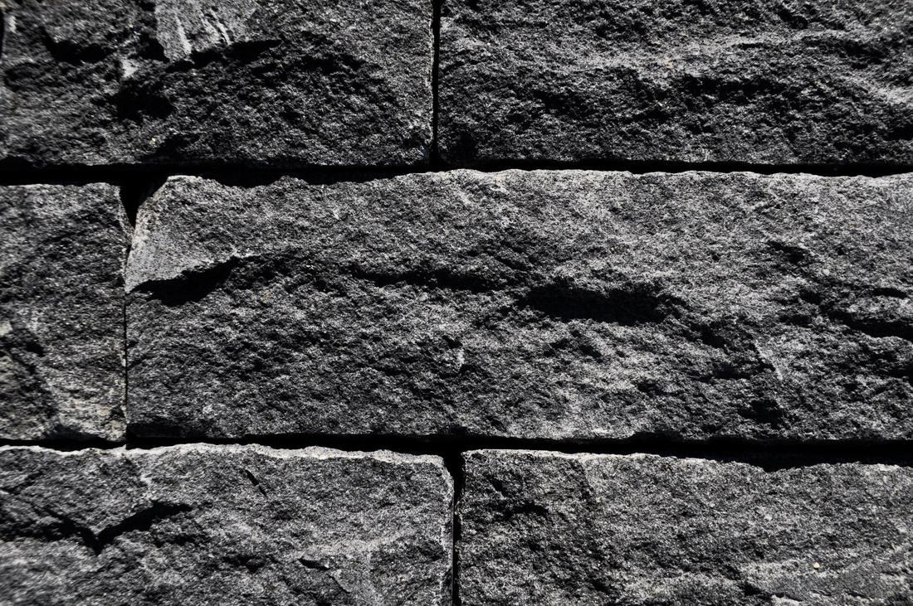
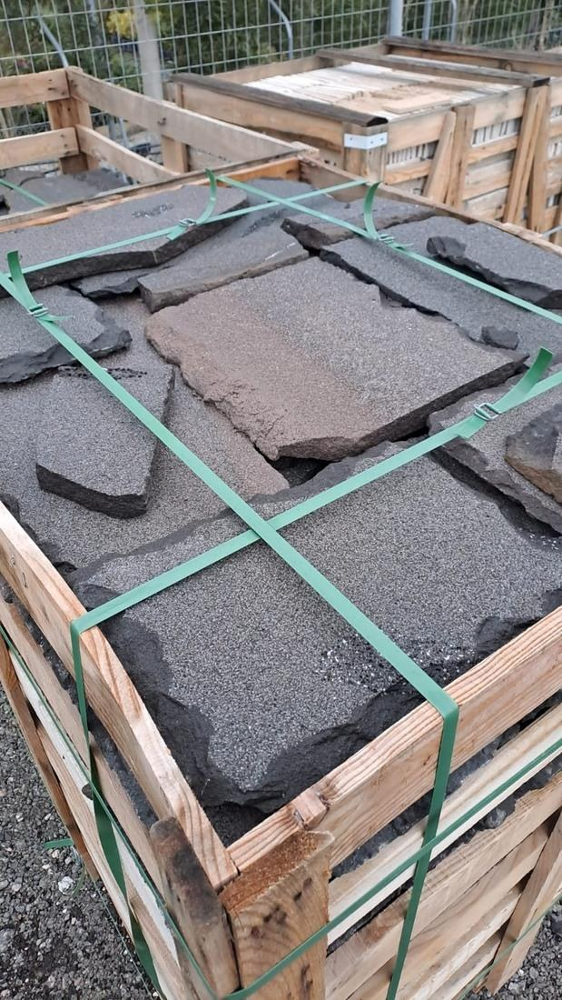

Ακανόνιστη τοποθέτηση
Ακανόνιστη επένδυση · Συρία
Basalt Mountain Face
Πυκνή ηφαιστειακή πέτρα σε ανθρακί έως σκούρο γκρι. Η πιο έντονη αντίθεση της γκάμας· ταιριάζει σε προσόψεις, τοίχους εισόδου και τζάκια.
Διάθεση
Φινίρισμα
Όψη βράχου, δουλεμένη στο χέρι
Εφαρμογές
Προσόψεις, μάντρες και τοίχοι κήπου, εσωτερικοί διακοσμητικοί τοίχοι, τζάκια
Μορφή
Ακανόνιστα κομμάτια, συσκευασμένα ανά m² σε κιβώτια
Χρώμα
Ανθρακί, σκούρο γκρι
Πάχος
3 cm ή 5 cm
Καλό να γνωρίζετε
Το χρώμα διαφέρει μεταξύ κομματιών και παραδόσεων· επισκεφθείτε την αυλή για να δείτε το τρέχον απόθεμα πριν παραγγείλετε. Ανακατέψτε κομμάτια από πολλά κιβώτια καθώς χτίζετε, ώστε η διακύμανση να απλωθεί ομοιόμορφα στον τοίχο. Υπολογίστε 10 % επιπλέον για κοπές και επιλογή.
Τεχνικά στοιχεία
Πυκνότητα
2 700 – 2 900 kg/m³
Υδατοαπορρόφηση
0.1 – 0.9 %
Αντοχή σε θλίψη
130 – 220 MPa
Ανά κιβώτιο
18 – 20 m² στα 3 cm · 11 – 12 m² στα 5 cm
Στερέωση
Κόλλα C2· μηχανική στήριξη πάνω από 3 m
Τυπικές τιμές του πετρώματος από δημοσιευμένα περιφερειακά δεδομένα· έκθεση δοκιμών για το συγκεκριμένο προϊόν εκδίδεται με κάθε παραγγελία.

Κομμάτια, όψη βράχου
Φυσική Πέτρα